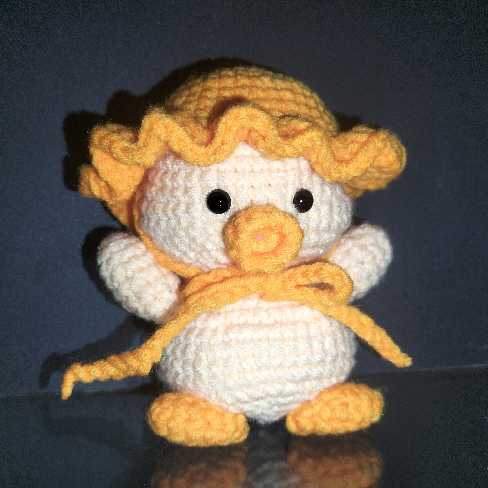
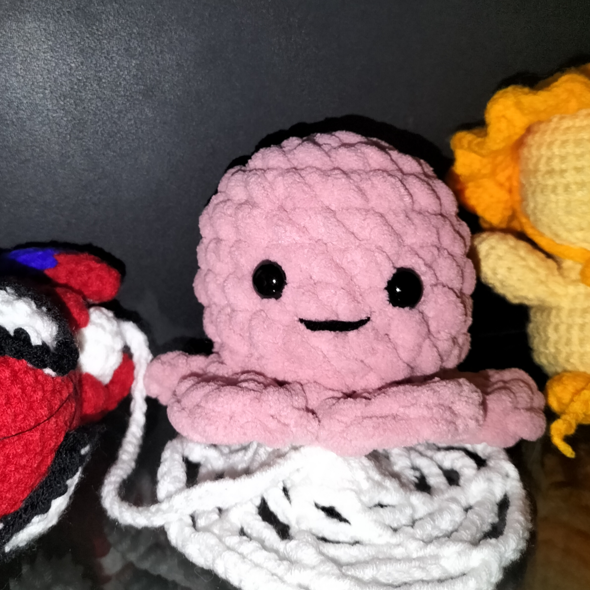
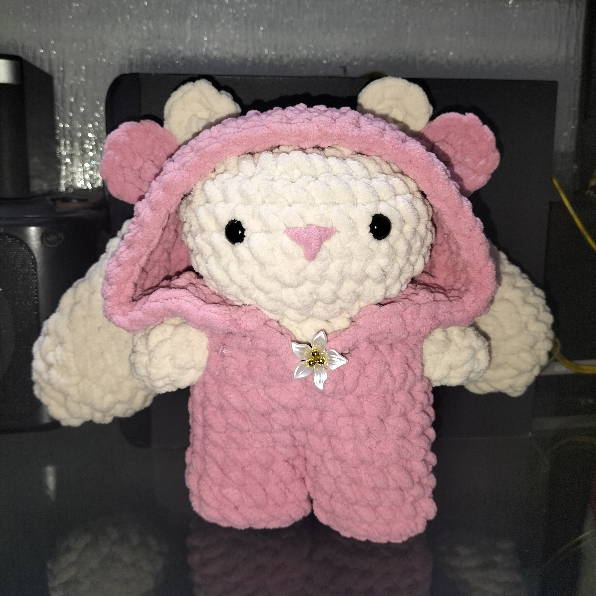
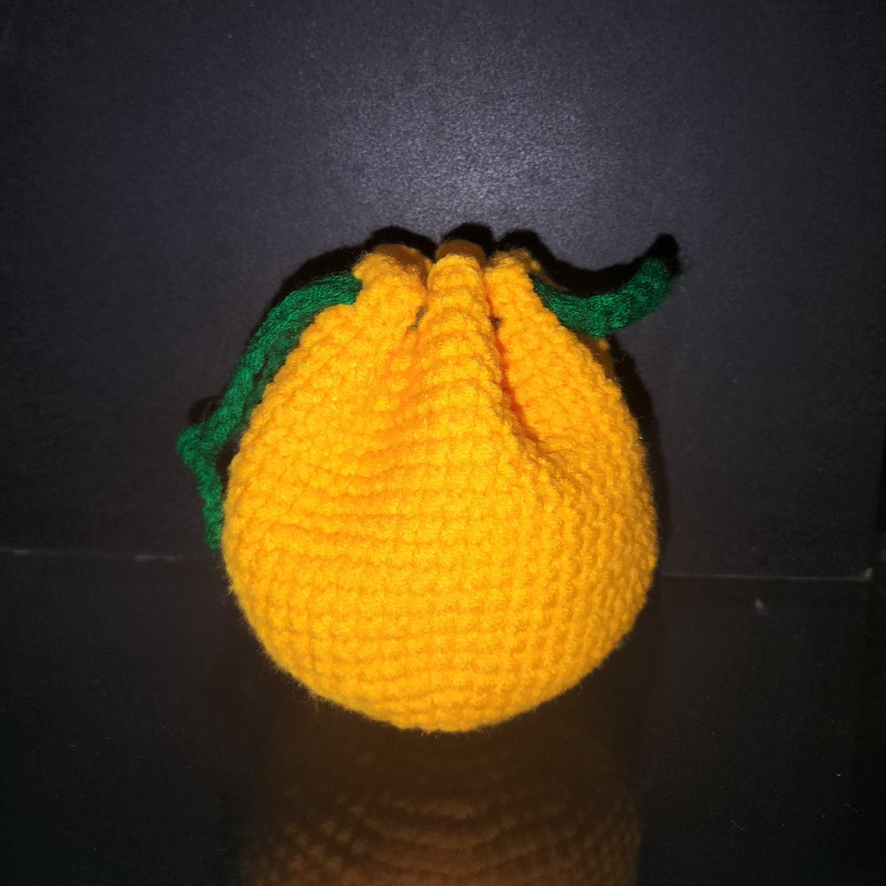

Karya Imut yang
Menghangatkan Hati
Setiap helai benang dirajut dengan cinta oleh Dara Hands. Menghadirkan boneka bebek, spiderman mungil, gurita pink, kelinci hoodie, dan jeruk tersenyum yang imut dan penuh karakter.

Halo, Kenalan Yuk!
Dara Hands adalah ruang kecil tempat benang-benang lembut berubah menjadi karakter imut. Setiap boneka bebek krim-orange, spiderman mungil, gurita pink, kelinci hoodie, dan jeruk ceria lahir dari tangan yang telaten dan hati yang hangat.
Nggak ada yang massal di sini. Semua dibuat satu per satu dengan benang pilihan, palet warna yang manis, serta detail yang dirawat sepenuh hati.
- 🧶 Benang lembut & aman, nyaman di kulit
- 🎨 Palet warna manis yang estetik & Instagrammable
- 🤲 Setiap karya unik, nggak ada yang kembar
- 💛 Dibuat dengan cinta di setiap simpulnya
Koleksi Dara Hands
Lihat-lihat karya yang sudah lahir dari Dara Hands
Si Bebek Krim-Orange
Si imut berparuh oranye dengan tubuh warna krim yang lembut. Ada aksen syal kecil bikin makin menggemaskan. Tinggi ±18cm, hadir dalam balutan nuansa hangat yang bikin hati meleleh.

Spiderman Mungil
Jagoan favorit dalam versi rajutan super mini! Tinggi cuma ±10cm, mungil tapi detail — garis jaring laba-labanya dirajut manual dengan telaten. Imut banget digenggam atau dipajang di meja kerja.

Gurita Pink Gemas
Si kecil berkaki delapan dalam balutan benang pink yang manis. Lengannya lentur, bisa diatur pose sesukamu — melambai, duduk, atau tiduran. Dirajut dari benang lembut warna pink yang cerah dan ceria.

Kelinci Hoodie Pink
Si kelinci putih mungil yang stylish! Tubuhnya rajutan benang putih bersih, lengkap dengan hoodie pink yang bisa dibuka-pasang. Telinga panjangnya bikin gemas, cocok jadi teman tidur atau hadiah spesial.

Si Jeruk Ceria
Buah jeruk mungil yang tersenyum manis! Warna oranye cerah dengan daun hijau kecil di atasnya, dan ekspresi wajah ceria yang bikin hari-hari makin segar. Cocok buat penghias meja atau teman belajar yang selalu bikin senyum.
✨ Setiap karya bisa dibuat dalam warna favoritmu ✨
Dari Benang Jadi Karakter
Intip sedikit proses di balik setiap karya Dara Hands
Pilih Benang
Benang lembut kualitas premium, dari krim, pink, putih, oranye, dan warna-warna manis pilihan.
Buat Pola
Setiap karakter — dari bebek, kelinci, gurita, sampai si jeruk ceria — punya pola unik yang dirancang khusus.
Rajut Tangan
Satu per satu, simpul demi simpul, penuh ketelatenan dan cinta.
Finishing
Detail akhir, aksesori kecil seperti hoodie atau daun hijau mungil, dan kemasan cantik.
Galeri Karya
Potret-potret rajutan yang sudah lahir dari tangan Dara Hands
📸 Lihat lebih banyak di Tiktok @elvardio